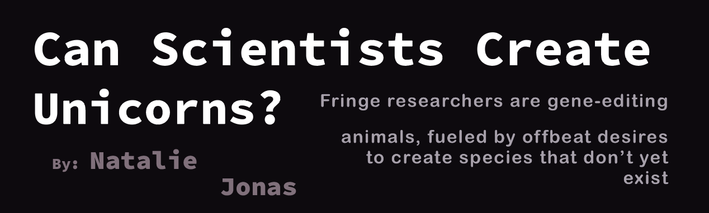
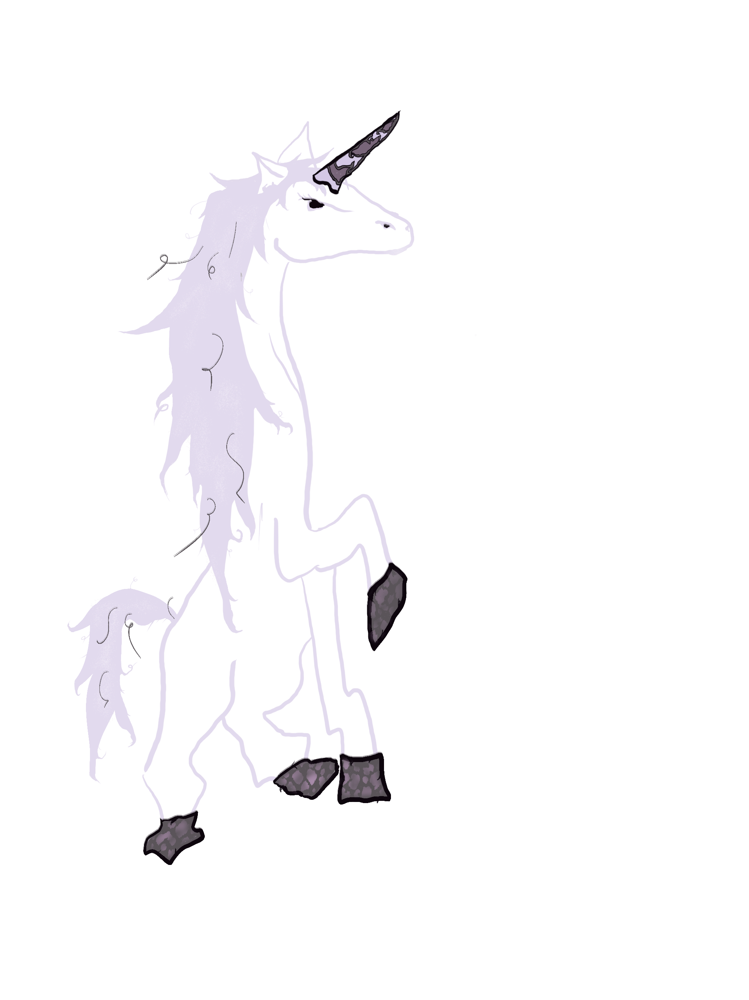
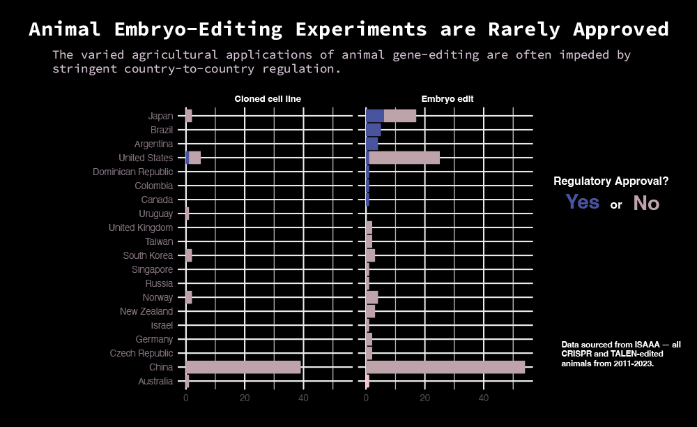
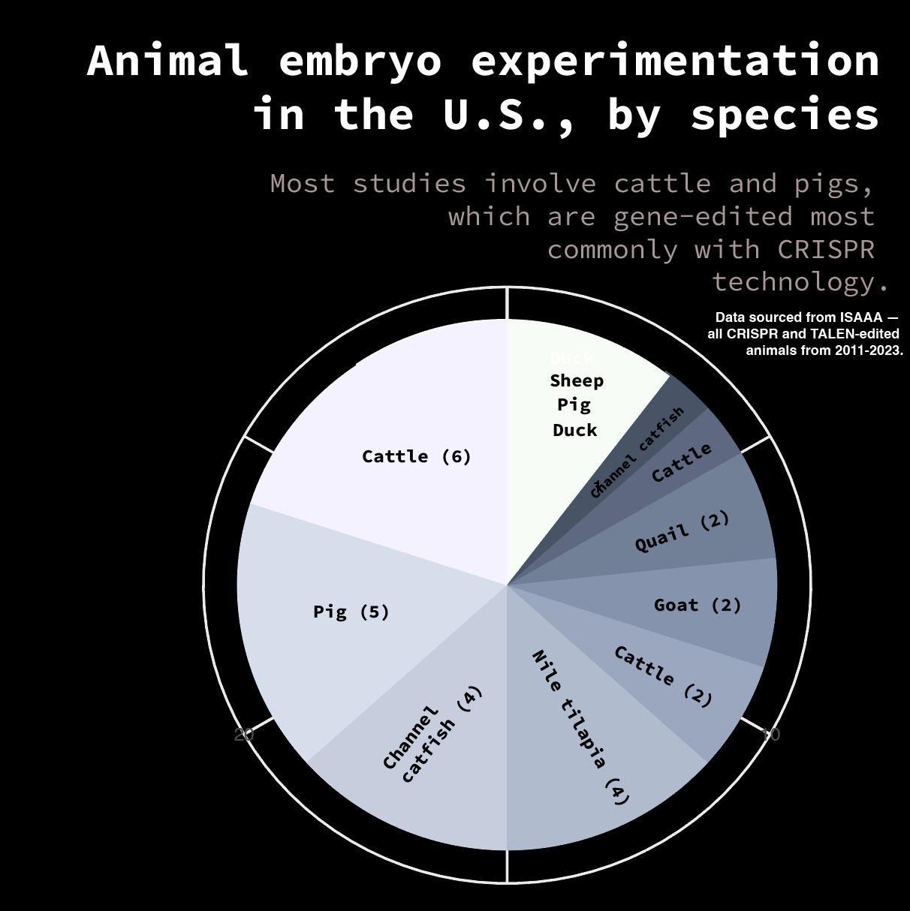
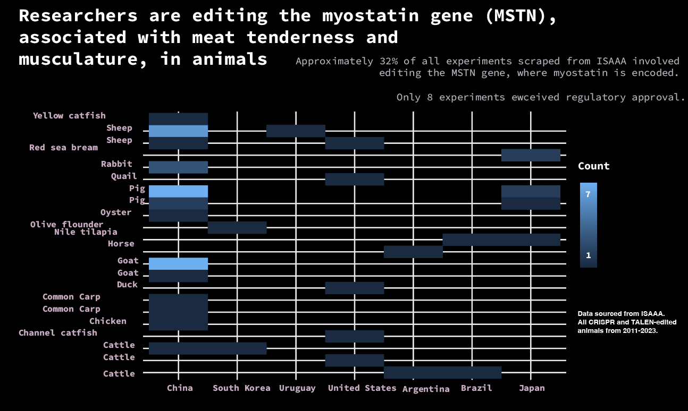
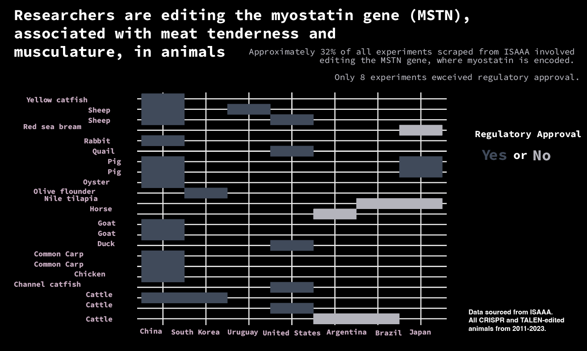

The genetic engineering and editing of animals is on the uptick, driven by an increasingly unobstructed regulatory landscape and billions of dollars in private investment. Some companies are even making mythical animals.

As industry interest in creating and commercializing gene-edited animals heightens, so have appetites grown for more "fringe" exploration into the possibilities and limits of the technology. Biotech companies have already proven their ability to create new species and optimize livestock species to produce more animal proteins such as milk, eggs and meat. Experiments involving genetic engineering animals are heavily often regulated and restricted in the United States, although now less so as a result of an increasingly lenient FDA. Billions of dollars flow into an overwhelmingly privately-held array of biotech companies, funding both mainstream and unorthodox experimentation in animals.
Although using genetic engineering to create new animals is a relatively new phenomenon, CRISPR, a technology capable of germline (heritable) and somatic (non-heritable) editing to modify DNA, has been used to modify animal DNA for more than a decade.
The CRISPR market is expected to grow from $4.21 billion in 2023 to $12.78 billion in 2033.
According to data scraped and analyzed from the International Service for the Acquisition of Agri-biotech Applications (ISAAA), of all experiments that used CRISPR-Cas9 or TALEN to edit an animal genome for agricultural applications, approximately 71% affected the germline, meaning the edited genetic code would be inheritable. Germline editing in animals is subject to stringent regulation in the U.S. and wholly banned in humans. Approximately 89% of such experiments were not granted regulatory approval, meaning they could not be commercialized in their respective countries.
Although China produces the most experiments, none were granted regulatory approval. Japan, Brazil and Argentina had the most approvals, relating to experiments ranging from editing muscles in the Nile tilapia to creating livestock cattle with shorter hair. Of Argentina's six studies, all were approved by the Argentine Biosafety Commission.

The United States granted two experiments, conducted in 2022 and 2025, the ability to commercialize their gene-edited animals for agricultural uses.
The U.S. denied 28 other projects.

Human interference in animal breeding is not a new phenomenon, having shaped human interaction with varied species for approximately 10,000 years. Selective breeding, abetted by modern technology, has fortified the existence of desired traits in target species — crops are edited to better resist disease, livestock are modified and bred to produce more meat and withstand higher tempratures. But, applications of gene-editing are not all inherently utilitarian.
Private biotech companies, such as Zayner's The Embryo Corporation and associated venture-capital backed Los Angeles Project, hope to modify animal embryos using CRISPR-Cas9 and a single, CRISPR-engineered injection capable of changing an organism's DNA. Logged genetic changes are then fed to AI, creating a database documenting cause-and-effect and eventually "first-of-its-kind robotic automation of embryo editing," as reported by PirateWires in February 2025.
The Embryo Corporation plans to create glow-in-the-dark rabbits by gene-editing rabbit embryos to produce GFP, a fluorescent protein. A consortium of researchers at the University of Hawai'i at Mānoa and the University of Istanbul first created fluorescent rabbits, which use jellyfish DNA to glow under black light, in 2013.
A number of zebrafish, modified by a Brazilian company (GloFish) to be fluorescent, escaped their isolated fish farms into creeks in Brazil's Atlantic Forest in 2022. Native to tropical freshwater habitats in South Asia, the zebrafish have no natural predators, and as a result are thriving to the consternation of local biologists.
The Embryo Corporation, too, alleges they created glow-in-the-dark rabbits in late 2025.
A future rife with successful genome editing can boost populations threatened with extinction or bring back animals long extinct, most notably evidenced in projects undertaken by Colossal Biosciences. Colossal announced that they used CRISPR to "resurrected" the dire wolf — a species that went extinct approximtaely 13,000 years ago — using a domesticated dogs as surrogates. The first two pups were born in October 2024, named Romulas and Remus.
Colossal remains intent on "resurrecting" the wooly mammoth by combining its genes with Asian elephant DNA. Colossal successfully engineered a "Colossal Woolly Mouse" in 2025 and hope to "revive" the wooly mammoth by 2028.
Recent research characterizes the influx of animal gene- and embryo-editing as a potential avenue to explore new conservation techniques, a lesser explored realm of impact. Genes can be edited to induce better adaptation traits in animals, particularly species most disadvantaged by a changing climate and related issues like pollution, by targeting alleles to improve adaptability. Currently, genome editing is most often used for population control, not for "de-extinction" or facilitated adaptation.
But, bioethicists, environmentalists and researchers have expressed fears regarding potential offtarget risks and impacts of such technology to edit animal DNA in all such applications.
The Przewalski's horse, saved from extinction by ex situ breeding, resulted in the population exploding from near-extinction to nearly 3,000 individuals today. Clones of Przewalski's horses followed soon after their population reinvigoration, borne to domesticated horse surrogates in 1980. Researchers utilized cryopreserved cells from the target species and cross-species somatic cell nuclear transfer. The success of the experiment presented an early, critical new look at using gene-editing for conservation and restoration breeding. Cloning any species necessitates a surrogate, whose mitochondrial genetic materials are passed down to the cloned animal, as noted by researchers studying Przewalski's Horse in 2025.
Experiments involving cloning animals, first successfully presented in 1996 after the birth of the first cloned mammal, Dolly the sheep, have had a litany of offtarget and surprising consequences and applications. Horses, although not commonly edited for agricultural purposes, are commonly gene-edited to maximizing athletic ability and performance. Ingrained pro-selective attitudes in equine sports regarding pedigree and Thoroughbred breeding have proven horse racing and polo a fertile ground for horse embryo editing experimentation.
Argentine company Kheiron Biotech, which specializes in equine cloning, created the first MSTN-edited horse embryos in 2020. The MSTN gene, where myostatin is encoded, can be changed to affect muscle growth in animals and humans.


Kheiron's successfully cloned foals, cloned from a prize-winning horse nicknamed "Polo Pureza" ("Polo Purity") and inserted with genes edited using CRISPR, were born in 2024. The profitability of selling cloned prize-winning horses, such as the 2010 sale of famed polo horse "Cuartetera" for $800,000, inspired a burgeoning industry in Argentina. Still yet, the Argentine Polo Associated banned genetically engineered horses from competing in 2025.
Zayner's company, The Embryo Corporation, plans to implant genes associated with horn-growth from a different species — potentially deer or antelope — into horse embryos incubated in an artificial womb. The company plans to iterate the process (using AI to algorithmically "guess and check") until they have created a unicorn.
The Embryo Corporation has hit a few roadblocks on their road to creating the first unicorn. Horses have much longer gestational periods than fish or rabbits, and nurturing a horse embryo growth is an arduous process. Horses also need more attentive care after birth than hamsters or fish (other species the company alleges they have successful gene-edited embryos of).